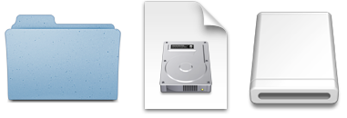

Disk images pack entire folders or disks into a single compressed file, either for transport across the Internet or simply for backup. They are Apple’s preferred format for distributing Mac software. Disk images are also the only archive format whose contents you can directly access in the Finder, without the potentially slow and disk-consuming step of expanding the files into a folder.

DropDMG is the easiest way to create Mac OS X disk images, as well as cross-platform archives. Just drag and drop a folder or file and you’re done. Or, you can drag an existing disk image or archive onto DropDMG to convert it to any of the other supported formats or to burn it to CD or DVD.
DropDMG supports advanced options such as encrypted and segmented disk images, background pictures and custom volume icons, and rich-text license agreements in multiple languages. There are many time-saving features such as configurations to keep track of your favorite combinations of settings. It can also be automated via AppleScript, the command-line, and Automator.